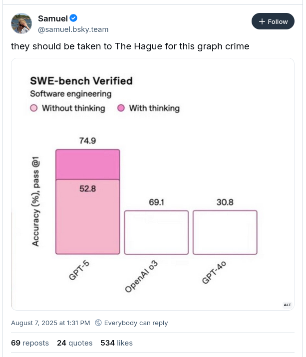

Graphics
Slides
This week’s big picture goal:
- Create well-designed graphics
- Identify which chart(s) to use
- Understand how cognition/perception impact graphics
Today’s Goals:
Pull the homework
Create graphics in R and python
Start thinking about what makes a chart “ugly”
Ugly Graphics
![A screenshot of a social media post that says 'several ppl sent me this extraordinary chart crime. Thank you, I love it.' The chart is titled 'It is harder than ever to afford a home' with subtitle 'Real weekly wages vs. median home price (2023 dollars), 1967-2023'. Two lines are shown: a steadily increasing line (median home price) with a few wobbles that starts at 200k and increases to just over 400k, and a completely flat line (weekly wages) that appears constant over the time period. The chart cites the Federal Reserve Bank of St Louis and the US Census, and has a Bernie logo in the bottom corner. Two comments are included: Richard McElreath @rmcelreath.bsky.social says 'the social media team that produced this deserves some kind of award for data visualization teaching materials', and Chris Neill @chrisneill.bsky.social says 'feeling great regret this wasn't out a month ago when I last taught some data viz, but definitely adding it to the what not to do package for the future'.](chart-crime-house-prices.png)
- Weekly wages aren’t really comparable to home prices, scale-wise
- Alternatives:
- compare annual wages to home prices
- use some other standard scaling for affordability
Ugly Graphics

69 and 69=30. The y-axis shows accuracy on 1st pass, and the gpt5 bars are broken into 'without thinking' (52.8) and 'with thinking' (74.9). Comparisons are shown to OpenAI o3 (69.1) and GPT-4o (30.8) -- these comparison bars are the same height even though the accuracy % is more than double for openAI o3 compared to GPT 4o.">![A screenshot of a tweet by Bella Figura criticizing a pie chart showing political party votes. Transcribed Text: #chartcrime? Or that Murdoch rag doing its usual mislead? Either way, pie charts are not serious charts and doing the pull out thing is even more amateur. Dont do it. Martin Jones @martincjones.com · 4mo Why is The Australian so bad at charts? This is dreadful. It takes the worst part of a pie chart (comparing area rather than length) and makes it even worse. Does the grey slice look twice as large as the orange slice? Does the blue slice look three times as large as the grey? #chartcrime Primary Vote If a federal election for the House of Representatives was held today, which one of the following would you vote for? If uncommitted, to which one of these do you have a leaning? 7% uncommitted excluded One Nation 6% Coalition 37% Labor 33% Greens 12% Other 12%](chart-crime-pies.png)
![The image is a screenshot of a social media post by Umit Singh Dhuga, highlighting a chart from Bloomberg. The post admires the beauty of the chart, labeling it the best of 2025. The chart is titled "Widening Losses" and shows a line graph depicting the decline in Tesla's share prices as Trump and Musk exchange remarks. On the y-axis, it shows US dollars and ranges from 280 to 325. The x-axis is marked with times ranging from 10:00 to 15:00 on June 5, 2025. The graph includes annotations with quotes attributed to Trump and Musk, pinpointing dramatic drops and providing context to the dialogue. The chart indicates a sharp decrease in Tesla shares, noted at several points with comments. The source of the chart is Bloomberg.](good-chart-tesla-shares.png)
![Figure caption: Changes in the distribution of childhood BLLs by age (A and C) and over time (B and D). The absolute distribution of BLLs experienced in childhood for US adults in 2015 (A) and the relative distribution (C). The absolute distribution of BLLs (B) and the relative distribution for the entire population over time for the period 1940 to 2100 (D). More than 90% of those born between 1950 and 1980 experienced BLLs in excess of 5 µg/dL, the threshold considered “safe” for children. The legacy of early life lead exposure will stay in the United States for decades to come.<br/> Description: The image contains four graphs labeled A, B, C, and D, depicting population distribution and blood-lead levels over different time periods. Each graph uses a stacked area chart to display data with varying colors. Graph A, titled Age Distribution: 2015, shows population size on the y-axis and age on the x-axis. It uses different colored bands to represent various early life blood-lead levels, showing peaks around ages 0-5 and 50-70. Graph B, titled Total Pop: 1940–2100, displays the total population over time with projections beyond 2020. It uses years on the x-axis and population count on the y-axis, using color-coded segments for different blood-lead levels. Graph C, titled Relative Distribution by Age: 2015, presents the percentage of population on the y-axis by age on the x-axis, using the same color scheme as graph A to represent blood-lead levels. Graph D, titled Total Pop: 1940–2100, showcases a relative percentage distribution similar to graph C but over time from 1940 to 2100, emphasizing changes in blood-lead levels over decades. A legend at the bottom indicates colors for early life blood-lead levels: dark red for 30+ µg/dL, orange for 25-29.9 µg/dL, yellow for 20-24.9 µg/dL, pale yellow for 15-19.9 µg/dL, light blue for 10-14.9 µg/dL, blue for 5-9.9 µg/dL, and dark blue for 0-4.9 µg/dL.](good-chart-lead.jpg)
![The image is a line chart titled 'Latest revisions to jobs data large but not unprecedented,' depicting monthly changes in U.S. nonfarm employment, seasonally adjusted, from 2021 to July 2025. The chart features three sets of lines representing first, second, and third releases of job data, along with shaded areas indicating revisions from the first to the third release. Peaks are noticeable during the pandemic period in 2021-2023, with larger revisions visible around early 2021. Annotations highlight 'Bigger revisions up and down happened during the pandemic' and state 'After President Trump took office again, BLS revisions have trimmed job gains. The same judged in 2024.' The chart notes significant revisions in May and June, where revisions meant 258,000 fewer jobs created than initially reported. The source is noted as the U.S. Bureau of Labor Statistics, with credit to Jacob Turcotte/Staff. A Twitter post above the chart has a comment, 'Good visualization,' with a profile photo and username visible.](good-chart-bls.png)